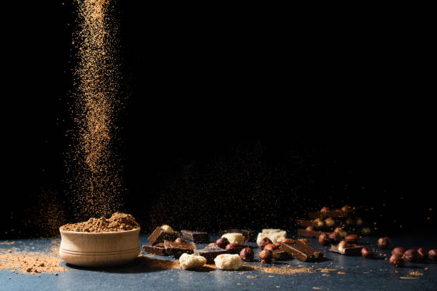
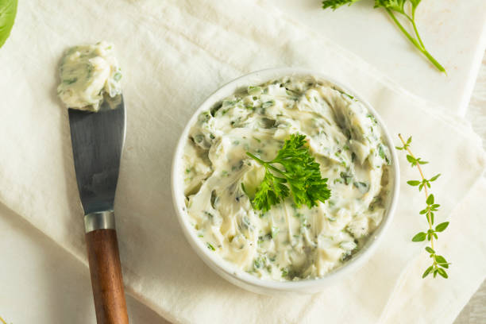
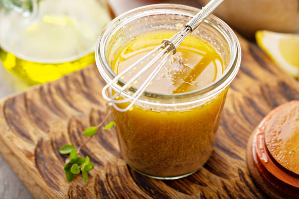

This is a minced fish recipe, perfect for those who prefer a finer texture.
This recipe features normal peeled fish, great for a classic fish dish.

This option offers peeled fish with added spices for extra flavor.
Choose the type of fish you want:
This is a minced fish recipe, perfect for those who prefer a finer texture.
This recipe features normal peeled fish, great for a classic fish dish.
This option offers peeled fish with added spices for extra flavor.
| Option | Description | Photo | Add Spices |
|---|---|---|---|
| Our Secret Spices | Discover the unique blend of spices that make our fish recipes extraordinary. |  | |
| Garlic Butter | Infuse your fish with the rich flavor of garlic and butter for a savory delight. |  | |
| Citrus Marinade | Enhance the freshness of your fish with a zesty citrus marinade. | ||
| Herb Crust | Coat your fish with a crunchy herb crust for a burst of flavor and texture. |  |